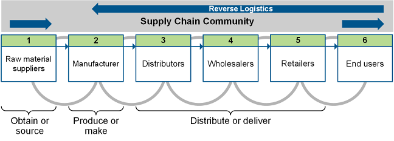

Customer service is the supply chain role that works to ensure that marketing promises can be met. Customer service metrics are discussed next from a strategic and operational perspective. Customer relationship management (CRM) performance relates to assessing how CRM is impacting customer service and customer satisfaction.
Customer service is the supply chain role that has the goal of fulfilling marketing objectives. In other words, what matters to customers should be the organization's top priority. What do they care about, and what happens when their expectations are not met? The basic customer satisfaction premise is that if customer expectations are met or exceeded, the customer will be satisfied. Customers have expectations about product availability, performance, quality, and service reliability.
Customer metrics need to measure what is important to the customer. Pinpointing exactly what they value and expect may require customer interviews, questionnaires, online feedback surveys, post-purchase follow-up calls, and so on.
Customer service metrics can be presented at a strategic or operational level. Strategic-level metrics are long-term, aggregated, or summary assessments. Operational metrics are the daily details that need managing. In addition to customer satisfaction as is discussed as part of strategic metrics, fundamental measures of basic customer service include the customer service ratio (fill rate), lead time monitoring, and order status monitoring.
Some strategic-level metrics that assess overall customer performance are discussed next, along with potential ways to present this information to executives.
Perfect order fulfillment is a total logistics service metric. It is a SCOR metric that basically measures every step of a customer's experience, from order entry, credit checks, inventory availability and picking, to on-time delivery, invoicing, and payment. Only an order that gets everything right counts as a perfect order. Perfect orders matter to profitability. According to AMR research, a three percent increase in perfect orders equates to a one percent increase in profits. However, since so many things can go wrong, it isn't surprising that even the best logistics organizations have considerable room for improvement in this area.
Another challenge with calculating this metric is that it could be difficult to collect necessary data, depending on the organization's level of internal systems or partner integration.
Customers have underlying expectations about the quality and predictability of an experience, and these expectations can change over time. For example, if most of your competitors are improving their supply chain customer experience, even if your metrics are all the same as last year, customer satisfaction is likely to go down because the customers now have higher expectations.
At a strategic level, organizations can use summarized and aggregated customer feedback. To determine relative levels of success, they can compare these results to benchmark organizations. They can also benchmark internal capabilities and the features, price, and quality of their offerings against competitors' capabilities and offerings or against the best-in-class capabilities in any industry. The gaps that exist based on aggregated customer feedback and competitive benchmarking show areas for improvement.
Some executives choose to view data on customer metrics in real numbers of persons affected rather than as an aggregate metric. In other words, while 99 percent may seem like you are doing well, if this is reported to the same executives as 9,000 customers getting late orders on a particular day, it can help motivate continued efforts toward improvement.
Similar to the use of real numbers to put a face on customer-related data, many executives want to see data in real time or as near to real time as they can get. This also helps to reduce complacency.
Exhibit 6-8 provides a look at metrics that are important to keeping customer satisfied.

The customer service ratio, also known as the fill rate, and a related measure, stockout frequency, can be used to measure availability of inventory when it is wanted by a customer. Orders shipped complete and backorders are other availability metrics.
The goal is to achieve high levels of availability while keeping the investment in inventory and facilities to a minimum.
Traditionally, many organizations have stocked product in anticipation of customer orders based on demand forecasts. The goal is to achieve high levels of availability while keeping the investment in inventory and facilities to a minimum.
Customer service ratio (fill rate) and stockout frequency can be defined as follows.
📖 ASCM Definition — customer service ratio:
📖 ASCM Definition — on-time delivery:
📖 ASCM Definition — fill rate:
Other variations include the following.
Unit fill rate. Percentage of items delivered versus items ordered
Line item fill rate. Percentage of line items delivered versus line items ordered
Monetary value fill rate. Percentage of monetary value delivered versus monetary value ordered.
Stockout frequency. Another method of measuring customer service evaluates the supplier's management of stockouts. Some examples include
Monetary value of items ordered that are in stockout
Average time to recover item from stockout.
Lead time monitoring involves measuring the time needed to deliver a customer order.
Lead time monitoring can be broken down into speed of performance, consistency, flexibility, and malfunction recovery.
Speed of performance. Speed in terms of operational performance is the elapsed time from when a customer places an order until the product is delivered to the customer and is ready for use. Logistical system design determines elapsed time required for the performance cycle completion. Idle time may constitute a large percentage of production time, while work or run time makes up a small percentage. The entire time it takes to make a product is called cycle time, and cycle times that are too long are a key area for supply chain improvements.
📖 ASCM Definition — cycle time:
Speeding up cycle time in production reduces work-in-process (WIP) inventory and meets supply chain management goals of reduced cost and improved customer service. The tradeoffs may be in the cost of equipment, facilities, training, or hiring that makes reduction of idle time possible. Faster speeds, which may result in higher costs to the consumer, may be justified if the value of speed has perceived benefits to the consumer. Speed of performance can be measured using metrics such as
Average wait time to be connected to an agent in a call or chat function
Percentage of calls to customer service that are abandoned.
Consistency. Consistency considers the number of times that cycles meet the planned amount of time for completion. Greater value is typically placed on consistency than on speed of service, because consistency has a direct impact on the customers' ability to conduct their activities. For example, if cycles vary, then a customer must carry safety stock to ensure against possible late delivery, with the overall degree of variability directly impacting safety stock requirements. Early deliveries could also cause problems, such as an intermediate customer having too many trucks arriving at the same time or an end customer not being home for delivery. Consistency metrics could include
Percentage delivered in quoted lead time.
Flexibility. Flexibility describes an organization's ability to accommodate unexpected or unusual customer requests. Examples requiring flexibility include support of customized sales or marketing initiatives, new product introductions or product recalls, or supply disruption. An organization's logistical strength is closely tied to the ability to be flexible.
Malfunction recovery. An effective customer service program knows that malfunctions and service breakdowns inevitably occur, and so the program will have a contingency plan in place. For example, if a stockout of a customer item occurs, an alternate facility may provide a replacement. The average number of days (or hours) from malfunction to recovery can be measured.
Order-status reporting involves providing methods for customers to check on the status of their orders. For example, the status might be listed as received, executed, picked, packed, or out for delivery. Status could indicate whether the order is on schedule, or, if not, it could estimate a new arrival date. Intermediate customers and ultimate customers may need access to a reporting system portal with role-based views so each type of customer sees just what is relevant to their needs. For intermediate customers, such a portal should enable order status to be automatically pulled by their information systems using application programming interfaces (APIs). Measurements of success in this area could include the following:
The effectiveness of the CRM strategy must be measured to ensure that the strategy and related technology are establishing lifetime customers and increasing profitability. Here we'll look at measuring customer service and customer satisfaction.
Some areas in which customer service can be measured include response to inquiries, order processing, level of service, and product or service quality.
Response to inquiries should be prompt and accurate. Responses related to supplying information can be measured by the delay between the initial contact and the response and the number of errors detected in responses. Another example of metrics in this area is executive complaints, complaints that are directed to higher-level managers and executives. (These sometimes are forwarded to a group of higher-level complaint handlers.) Performance measures include tracking the volume, response time, and trends of such complaints. For telemarketing, metrics may include the percentage of calls getting a busy signal, the average answer time, the number of disconnected calls, or the percentage of repeat calls from a customer.
Order processing should be fast and accurate. Delivery should be on time. Order processing metrics include order cycle time, the percentage of orders that were mechanically received, the percentage of orders with errors, and website ease of use.
Level of service is measured by delivering the right product, in the right quantity, at the right time, to the right place, in the right condition, and with the right packaging and documentation. Level-of-service metrics may include the percentage of orders shipped complete and on time, the number of backordered items, the average age of backorders, and the value of backordered items.
Product or service quality is measured by cost-of-quality issues. Product or service metrics may include the number of executive complaints, defect rates, warranty costs, product returns, and website downtime.
Customer service can also be measured using customer-facing SCOR® metrics, which assess supply chain reliability, responsiveness, and agility.
The best source of customer metrics is the customers themselves. The SCOR customer-facing metrics and other metrics can be used to measure likely customer satisfaction, but even perfect scores measure only the absence of issues; they can't guarantee customer satisfaction with products or services. A customer may get the correct product on time exactly as ordered and not return it, but this doesn't mean that the customer is satisfied. Measuring how well the organization is doing in terms of order fulfillment is important, but customer perceptions are what matters.
Customer satisfaction therefore hinges on how well customer expectations are established and then fulfilled.
Customer satisfaction therefore hinges on how well customer expectations are established and then fulfilled. If customer expectations are met or exceeded, the customer will be satisfied. Organizations can go a long way toward customer satisfaction by setting realistic expectations with their customers. One phrase that sums this up is to under-promise and over-deliver. The airlines now do this by quoting very generous flight times and then typically arriving "early."
Organizations have frequently used customer complaints as a proxy for measuring customer satisfaction. Although this method may bring to light some customer issues and complaints, it does not begin to accurately measure the satisfaction level of the customers. A study determined that manufacturers of large ticket goods or services hear less than five percent of the complaints of their unhappy customers. If organizations are going to move to a more customer-centric supply chain management model, they must measure more than customer complaints.
The question is, who assesses customer satisfaction—the organization or the customer? Organizations can use internal data to measure performance against common customer expectations, but external review data—the customer's own evaluation of the experience, such as the voice of the customer—are more meaningful.
If an organization leverages partner relationship management (PRM), it can better control how a customer is treated throughout the customer experience. According to Ross in his text Introduction to Supply Chain Management Technologies, PRM is a business strategy that includes tools to increase the long-term value of a company's channel network. PRM software enhances communications, processes, and transactions throughout the supply chain system. It also assists companies in selecting the right sales partners and facilitates the communication between them. It searches for ways to improve not only sales but also the productivity and competitiveness of partners. The synergy created helps each trading partner to contribute to customer satisfaction.
The quality of service in each delivery channel needs to be evaluated. One way is by evaluating the trustworthiness of the channel. Customers must trust the channel to deliver on time and in the way communicated. Next, customers should feel that they have been treated fairly, with respect, and in a competent, friendly manner. Finally, to evaluate the delivery channel, one must look at the effectiveness of problem resolution: Can customers quickly reach someone empowered to resolve the problem? Do customers feel that everything is being done to address the problem as quickly as possible? Are they satisfied with the solution?
The general customer satisfaction measurement process is to poll customers on how you are doing relative to each customer-focused metric you are tracking. You can also ask them how your competitors are doing in regard to the same metrics. Tracking these results over time will show trends. Below are some possible methods that can be used to measure an organization's customer satisfaction level:
Voice of the customer (VOC). VOC can be used to gather unscripted customer feedback from interviews, conversations, and focus groups. This information may help discover hidden areas of satisfaction or dissatisfaction. Organizations may use VOC with their most valuable customer segments to discover how their expectations and requirements have been changing and find gaps to focus on first.
Transaction customer feedback questionnaires. A transaction-based questionnaire measures customer satisfaction at each transaction point. Assessment tools must be brief, but they can be simple to implement. For example, a leading car rental company asks every customer returning a car whether the rental experience was satisfactory, either in writing or verbally. If a customer indicates dissatisfaction, employees are trained to address the problem or concern immediately. Many quality certification systems such as ISO 9000 also require a documented closed-loop feedback system of customer improvement.
Monthly/quarterly customer feedback questionnaires. This is a more detailed periodic questionnaire sent to customers regarding their overall experience over the last month/quarter. The technique can be expensive; however, the benefits can far outweigh the costs in terms of detailed customer information.
Participation in performance reviews. This technique may be especially useful in the B2B setting. Key customers are asked to evaluate their account manager's or team's performance. The customer perspective complements the internal company focus on quotas and numbers. Reviews solicited from external perspectives like these resemble the 360-degree feedback system used for internal peer reviews.
Collecting and responding to negative comments on the internet and social networking sites. Organizations can actively search for and respond to negative comments on the internet or on social networking sites such as Twitter or Facebook. A 2021 article by Flori Needle that compiles social media statistics cites a Convince & Convert study that indicates that customer advocacy increases by 25 percent when a customer's social media complaint is answered, but it also cites research by Sprout Social that indicates that while 79 percent of consumers expect brands to respond to social media posts within a day, average cross-industry brand response rates are less than 25 percent for any response at all.
The feedback gained from these approaches can help improve customer service issues, order fill rates, etc., and will allow organizations to implement corrective action and improvement for customer satisfaction. The goal must be to give customers an acceptable level of service the vast majority of the time so as to achieve the targeted customer satisfaction rate.